Everything on Timesheets
In the office app, press Help and type everything on timesheets
: the tour plays on your own screen, with your own data.
-
 1
1Timesheets
Each person's week from the crew app: every part of the day, paid hours, overtime after 40 h, missed clock-outs. Breaks are unpaid.
-
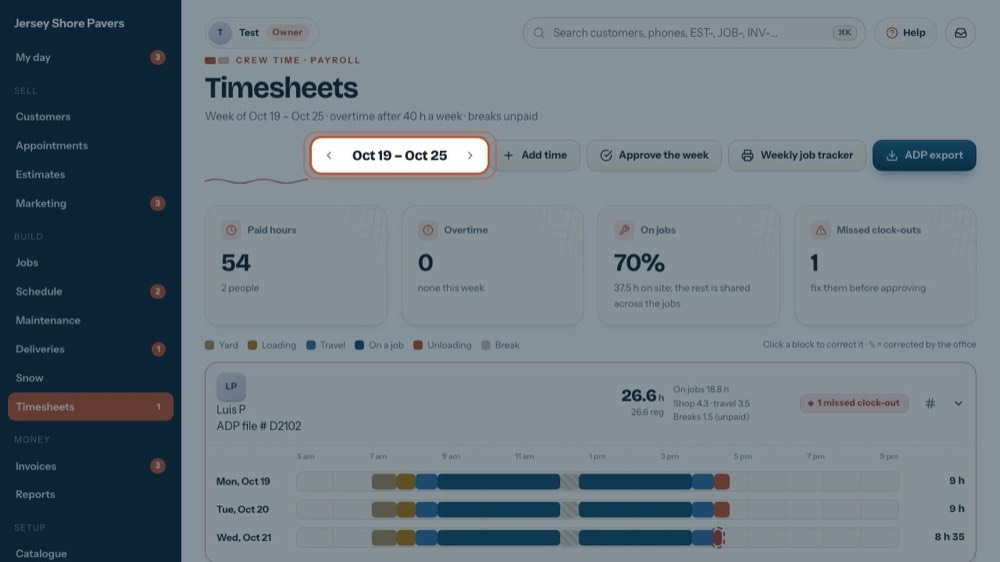
2Pick the week
The arrows go back or forward a week. This week shows up when you are on an older week.
-
 3
3Add time
Adds a forgotten punch or a paper timesheet. Tour: "Fix a missed clock-out or add time".
-
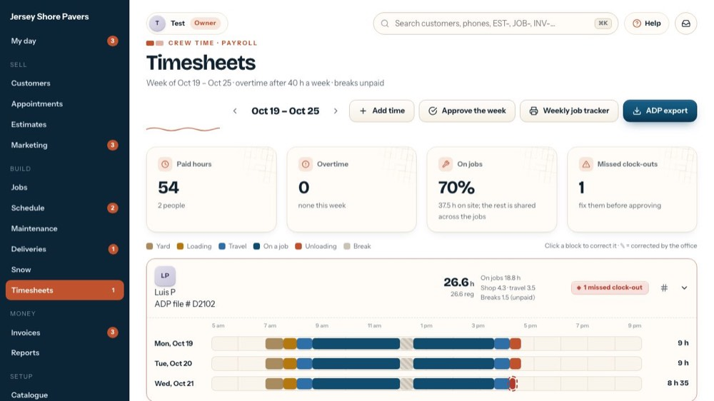
4Approve the week
Approves everyone whose week has no missed clock-out. Payroll gets approved hours only.
-
 5
5Weekly job tracker
The paper landscape job tracker, filled in from the crew app: each day, each job with start, end, men and man-hours.
-
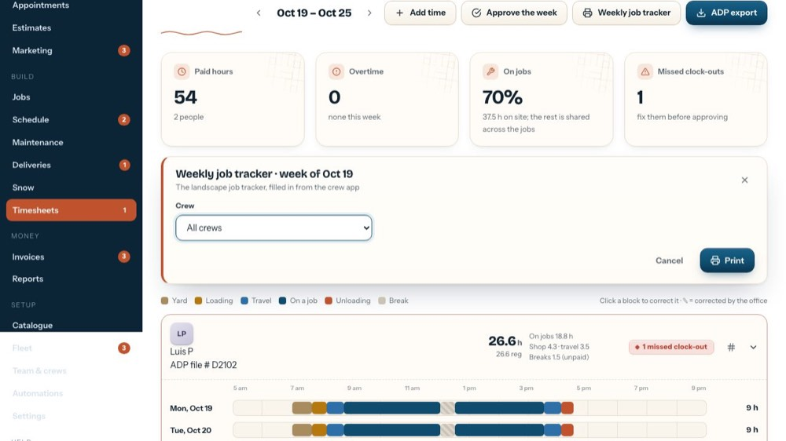
6Crew
One crew, or all of them.
-
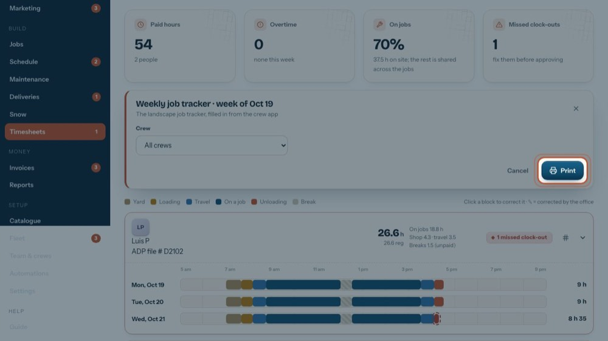
7Print
Prints the tracker.
-
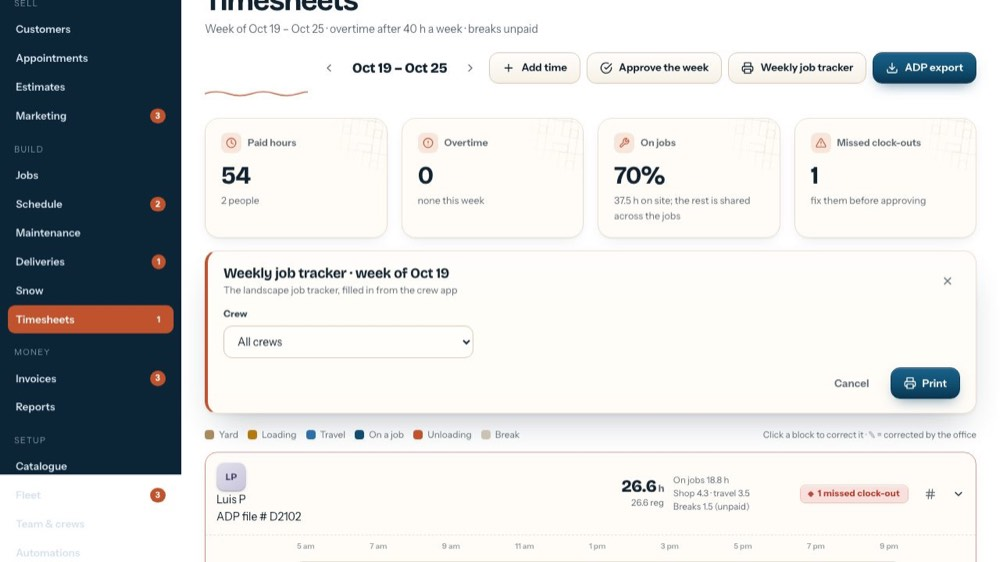
8Close the form
The x closes the form without saving anything.
-
 9
9ADP export
Shows the approved week as pay data for ADP Workforce Now, to copy or download. Set the ADP company code under Settings first.
-
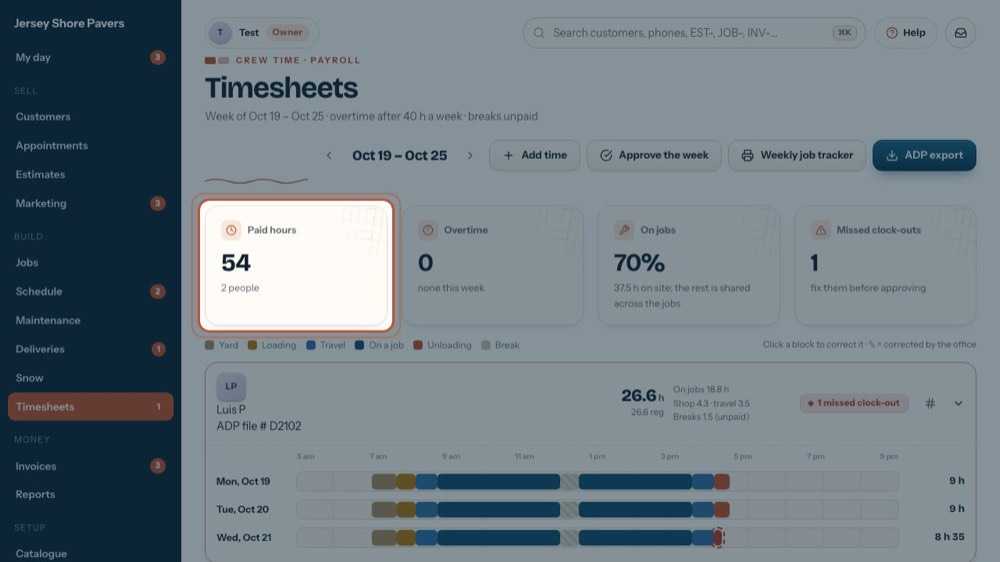
10Paid hours
Paid hours for everyone this week (breaks left out).
-
 11
11Overtime
Hours past 40 in the week, across all jobs.
-
 12
12On jobs
The share of paid time on site. Yard, loading and travel are shared across the day's jobs for costing.
-
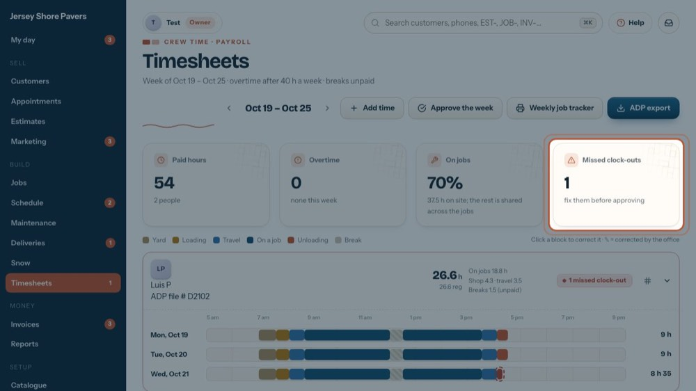
13Missed clock-outs
Missed clock-outs to fix before approving. When there are none, how many people are approved.
-
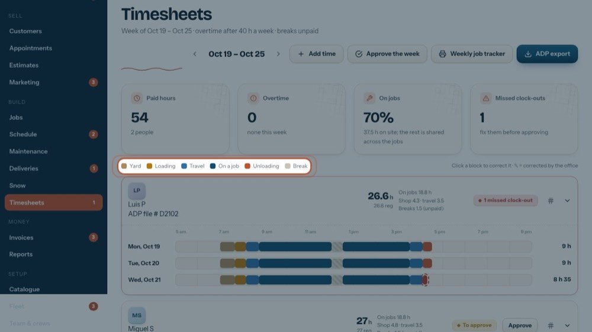
14The colours
Yard, Loading, Travel, On a job, Unloading, Break. Click a block in a ribbon to correct it; ✎ = corrected by the office.
-
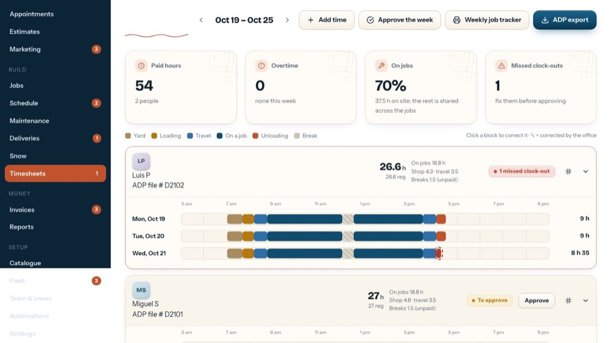
15One person's week
Name, ADP file #, paid hours (regular + OT), hours on jobs, shop, travel and breaks. Click the row to fold or open the days.
-
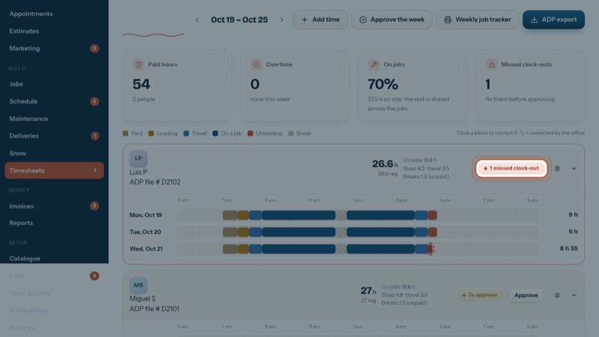
16Their state
Missed clock-out (fix it first), To approve, or Approved.
-
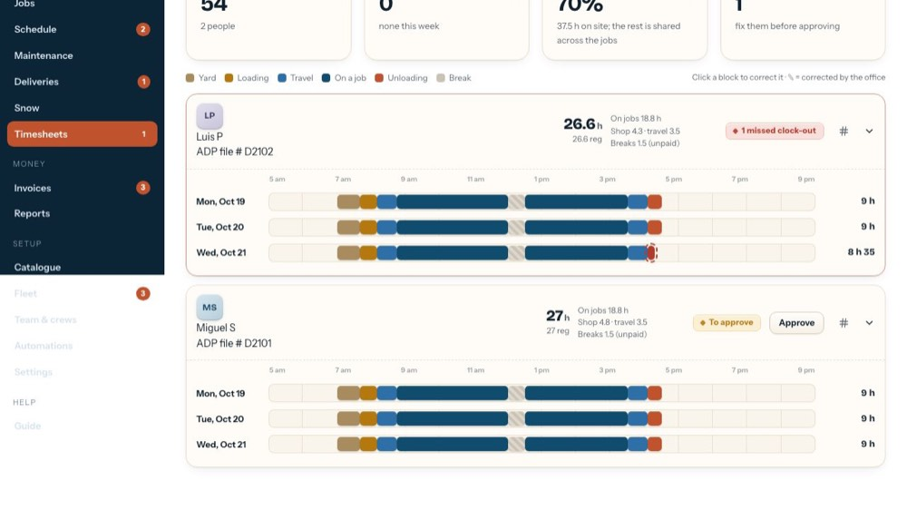
17Approve one person
Approves just this person's week. An approved week shows an undo arrow instead.
-
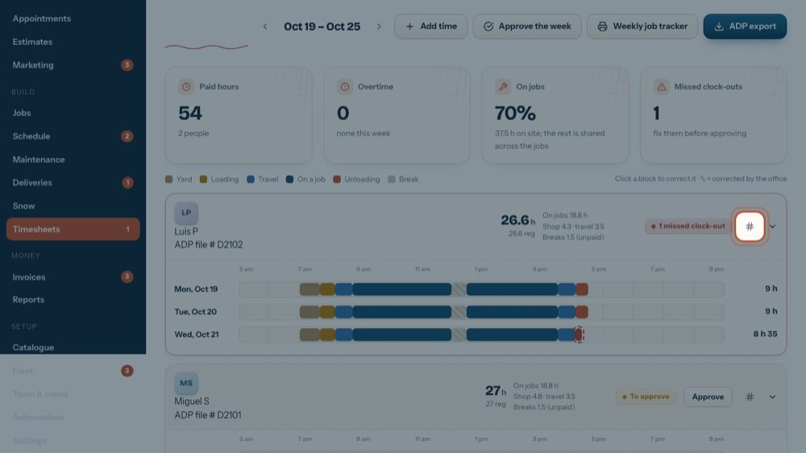
18ADP file #
The person's file number in ADP; the export uses it.
-
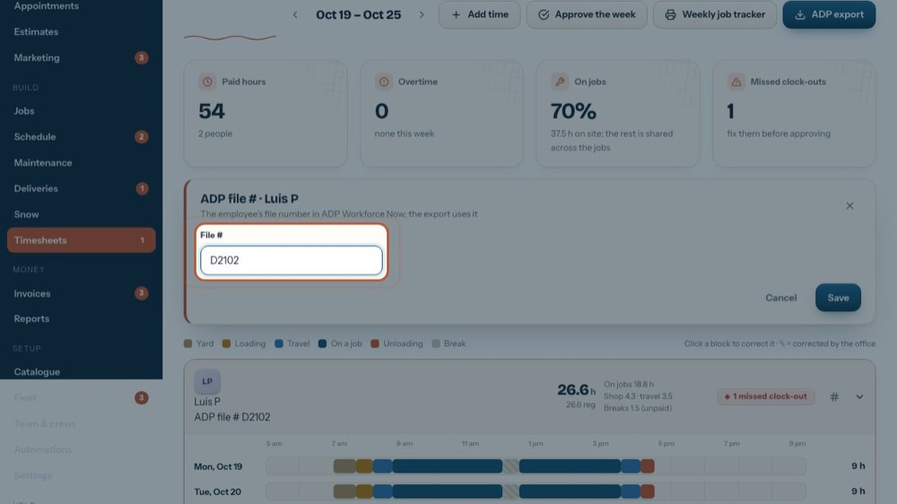
19File #
Type it as it is in ADP Workforce Now.
-
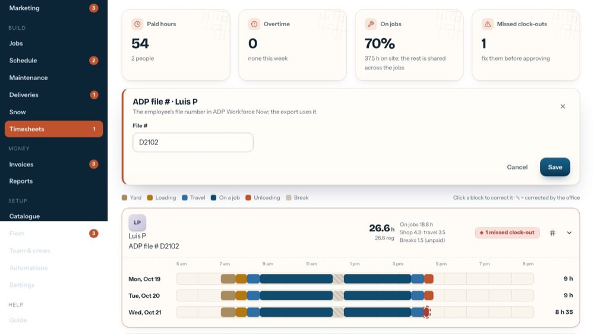
20Save it
Save keeps it. The tour doesn't press it.
-
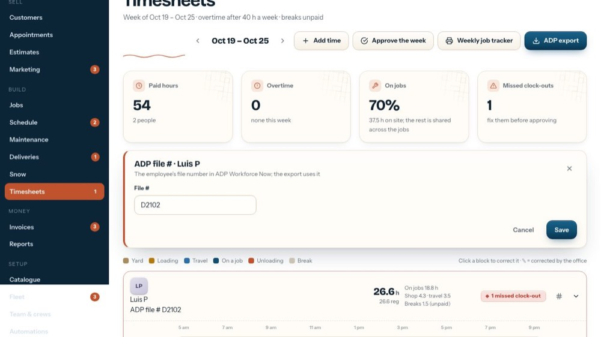
21Close the form
The x closes the form without saving anything.
-
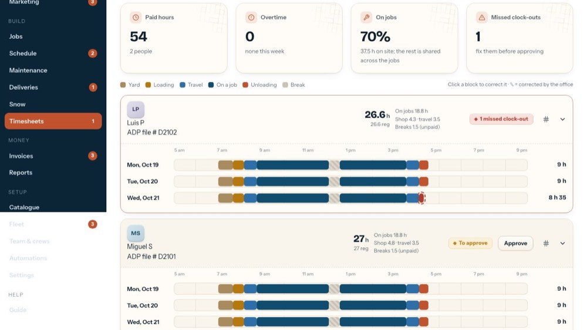
22A day as a ribbon
5 am to 9 pm; each block is a part of the day, and the day's paid total is on the right. Hover a block for its times and job.
-
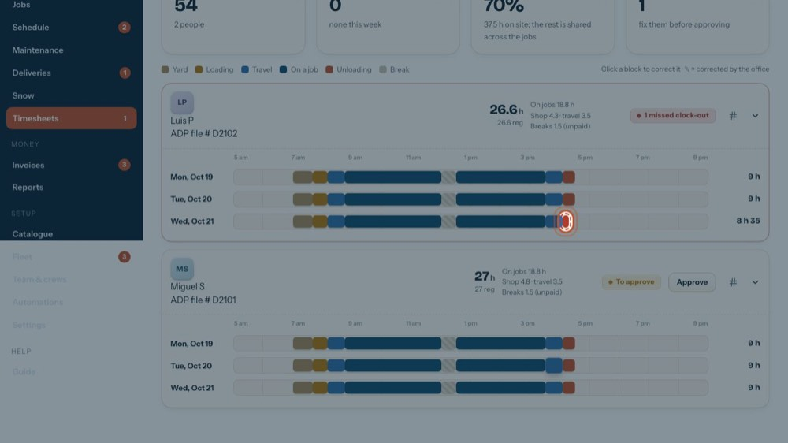
23A missed clock-out
The red dashed block never closed. Click it to put in the real end time.